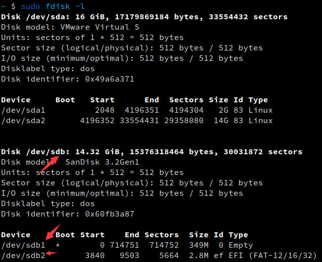
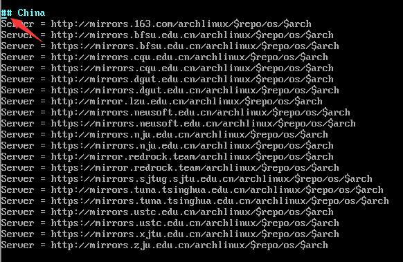
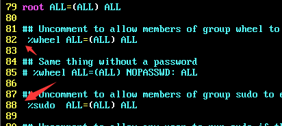

Arch Linux 全家桶
前言：强烈建议观看 Arch Wiki 进行安装配置
安装
0x00安装前准备阶段
1、到各大镜像站下载Arch Linux最新镜像文件以及.sig文件并验证
1
2
3
4
5
6
7
8
9
10
11
| $ md5sum archlinux-2021.01.01-x86_64.iso
48d67c59afcd2e39f25799efcc2b1999 archlinux-2021.01.01-x86_64.iso
$ sha1sum archlinux-2021.01.01-x86_64.iso
c3082b13d3cf0a253e1322568f2fd07479f86d52 archlinux-2021.01.01-x86_64.iso
$ pacman-key -v archlinux-version-x86_64.iso.sig
$ gpg --keyserver pgp.mit.edu --keyserver-options auto-key-retrieve --verify archlinux-2021.01.01-x86_64.iso.sig
|
此处验证可以忽略，若下载采用HTTP协议则尽量验证一下
2、刻录镜像
Windows：软件刻录
rufus、UltraISO软碟通
Linux：DD

1
2
3
4
5
6
7
8
9
10
11
|
$ sudo umount /dev/sdb1 /dev/sdb2
sudo dd if=/tmp/archlinux-2021.01.01-x86_64.iso of=/dev/sdb bs=4M
$ ps aux | grep dd | grep -v "grep"
$ sync
|
0x01 开始安装(安装过程中皆为root权限)
1、联网
1
2
3
4
5
6
7
8
|
$ ip link
$ dhcpcd
$ iwctl
|
- 都不行的话就用手机USB网络共享，手机连Wifi也可以
2、验证启动方式
1
| $ ls /sys/firmware/efi/efivars
|
- 如果命令没有错误地显示了目录，则系统以 UEFI 模式启动。如果目录不存在，系统可能以 BIOS 模式或 CSM 模式启动。
3、更新系统时间
1
| $ timedatectl set-ntp true
|
4、建立硬盘分区
1
2
| $ fdisk -l
$ fdisk /dev/nvme0n1
|
能用到的操作: n：新建 w：写入 q：退出
1
2
3
4
5
6
| $ fdisk -l
Device Boot Start End Sectors Size Id Type
/dev/nvme0n1p1 ---- ---- --- ------- 512M -- ----
/dev/nvme0n1p2 ---- ---- --- ------- 8.8G -- ----
/dev/nvme0n1p3 ---- ---- --- ------- 460G -- ----
|
5、格式化分区
1
2
3
| $ mkfs.ext4 /dev/nvme0n1p3
$ mkfs.fat -F32 /dev/nvme0n1p1
$ mkswap /dev/nvme0n1p2
|
如果在格式化EFI分区时提示：”WARNING: Not enough clusters for a 32 bit FAT!”，请运行
1
| $ mkfs.fat -s2 -F32 /dev/nvme0n1p1
|
运行 mkfs.fat -s2 -F32 … 或 -s1 以减小簇大小，否则 UEFI 无法读取分区。
6、挂载分区
1
2
3
4
| $ mount /dev/nvme0n1p3 /mnt
$ mkdir -p /mnt/boot/efi
$ mount /dev/nvme0n1p1 /mnt/boot/efi
$ swapon /dev/nvme0n1p2
|
7、安装基本系统
1
| $ vim /etc/pacman.d/mirrorlist
|

挑选自己喜欢的镜像站复制到文件首部 (也可以全部移到首部)。
1
| $ pacstrap /mnt base linux linux-firmware
|
8、配置系统
1
2
3
4
| $ genfstab -U /mnt >> /mnt/etc/fstab
$ cat /mnt/etc/fstab
$ arch-chroot /mnt
|
- 以上为U盘中的live系统，以下为安装到电脑中的系统
时区
1
| $ ln -sf /usr/share/zoneinfo/Asia/Shanghai /etc/localtime
|
本地化
编辑 /etc/locale.gen 文件移除需要地区前的注释符号，例：en_US.UTF-8、zh_CN.UTF-8、zh_TW.UTF-8 UTF-8
1
2
3
4
| $ locale-gen
$ echo LANG=en_US.UTF-8 > /etc/locale.conf
|
网络配置
1
2
3
4
5
6
7
8
| $ echo gaishishenlun > /etc/hostname
$ vim /etc/hosts
------------------------------------------------------
127.0.0.1 localhost
::1 localhost
127.0.1.1 gaishishenlun.localdomain gaishishenlun
|
基本设置
1
2
3
4
5
6
7
8
9
10
11
| $ pacman -S fish
$ passwd
$ useradd -m -G wheel -s /usr/bin/fish gaishsihenlun
$ passwd gaishishenlun
$ pacman -S iw wpa_supplicant dialog netctl dhcpcd
$ pacman -S sudo
|

安装引导程序（GRUB）
根据引导类型选择一个进行安装
1
2
3
4
5
| $ pacman -S grub efibootmgr
$ grub-install --target=x86_64-efi --efi-directory=/boot/efi --bootloader-id=GRUB
$ grub-mkconfig -o /boot/grub/grub.cfg
|
1
2
3
4
5
| $ pacman -S grub
$ grub-install --target=i386-pc /dev/nvme0n1
$ grub-mkconfig -o /boot/grub/grub.cfg
|
- 上述安装过程中无错误出现即为安装成功，否则必须重新安装。
0x02 重启、结束安装
1
2
3
4
5
| $ exit
$ umount /mnt
$ reboot
|
至此，Arch Linux 安装成功
系统配置
0x00 基本软件
1
| $ sudo pacman -S neovim pkg-config xterm fakeroot binutils curl wget git yay make cmake clang nodejs npm goland ruby maven gcc jdk8-openjdk neofetch unrar unzip p7zip zsh tmux openssh gimp firefox chromium
|
0x00 X 窗口管理系统
1
| $ sudo pacman -S xorg xorg-xinit
|
0x01 桌面环境
-1- dwm窗口管理器
1、克隆源代码
1
2
3
4
|
$ git clone https://git.suckless.org/dwm
$ git clone https://git.suckless.org/dmenu
$ git clone https://git.suckless.org/st
|
2、构建
1
2
3
4
5
6
| $ cd dmenu/
$ sudo make clean install
$ cd st/
$ sudo make clean install
$ cd dwm/
$ sudo make clean install
|
修改/etc/X11/Xinit/xinitrc在最后一行加入exec dwm，注意前一行尾部要有&.
然后在tty界面输入startx启动.
3、dwm的一些默认设置
dwm默认的 MODKEY 为 Alt 键。
Alt + Shitf + Return(回车) 打开终端 (默认为st)
Alt + P 打开启动菜单
Alt + Shitf + q 关闭dwm (也可以在命令行输入killall dwm)
4、个性化配置dwm
0x02 美化
1
2
| $ sudo pacman -S feh picom xfce4-power-manager alsa-utils
|
2、polybar
1
2
| $ yay -S polybar
$ sudo pacman -S libmpdclient mpd
|
-2- kde
- plasma-desktop
- plasma
- konsole # 终端
- latte-dock # 下方的dock
1
| $ sudo pacman -S plasma plasma-desktop konsole latte-dock
|
字体
1
| $ sudo pacman-S adobe-source-han-sans-cn-fonts adobe-source-han-serif-cn-fonts nerd-fonts-code-new-roman ttf-wps-fonts
|
常用
- netease-cloud-music #网易云
- mplayer #轻量视频播放器
- vlc # 视频播放器
- telegram # 社交
- yakuake # 下拉式终端
- obs # 录屏直播
- wps # office
- pencil # 画画
- ranger # 终端文件管理器
- feh # 图片查看器
- Dolphin # kde文件管理器
- v2ray qv2ray # 网络加速
- kdenlive # 视频剪辑
1
| sudo pacman -S netease-cloud-music mplayer vlc telegram-desktop yakuake obs-studio wps pencil ranger feh dolphin kdenlive
|
开发环境
1
| sudo pacman -S visual-studio-code-bin
|
web
- nmap # 网络扫描
- sqlmap # sql注入
- zaproxy # yyds
1
| $ sudo pacman -S nmap sqlmap zaproxy
|
pwn
需要Wine环境
- Pwntools # pwn选手专用库
- pwndbg # 动态调试
添加 source /usr/share/pwndbg/gdbinit.py 到 ~/.gdbinit
- one_gadget # 一键从libc中找到可以getshell的地址，ruby环境
- main_arena_offset # 取自github
1
2
3
| $ yay -S pwndbg
$ pip install pwntools
$ gem install one_gadget
|
- lynis # 系统扫描工具
- ettercap # arp攻击
- wireshark # 流量分析
- aircrack-ng # wifi攻击套件
- metasploit # msf框架
- maltego # 社工框架
- chntpw # 密码破解工具
1
2
| $ sudo pacman -S lynis ettercap wireshark aircrack-ng metasploit chntpw
$ yay -S maltego
|